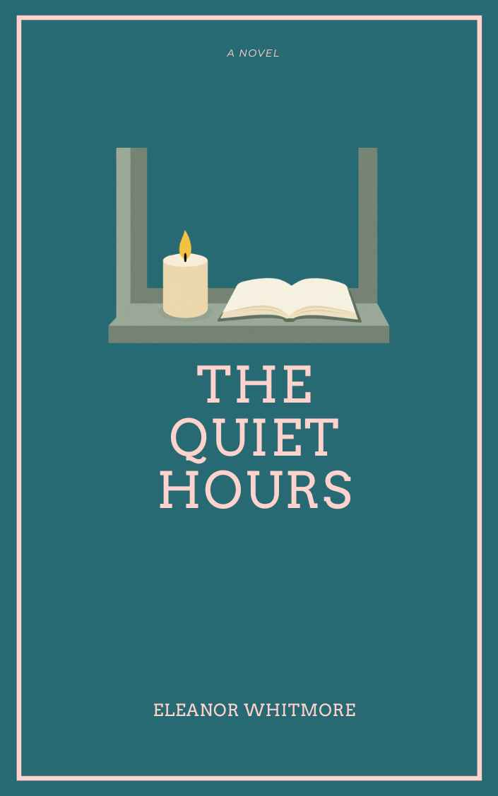

Book Details

The Quiet Hours
Author: Eleanor Whitmore
Published: 2021 · Pages: 244 · ISBN: 978-1838540126
Available
A night librarian discovers the books in her care keep the town's memories safe — a gentle, candle-lit story about quiet, care and community.
Borrow This Book